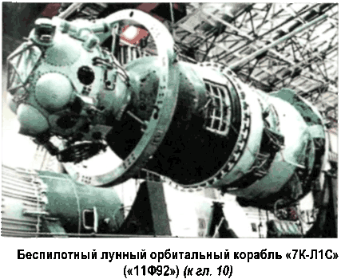

Альтернатива-5: Русские на Луне
Передо мной на столе два увесистых тома — две книги одного автора. Одна называется «Сломанный меч Империи», вторая — «Битва за небеса». Автора зовут Максим Калашников, но, скорее всего, это псевдоним, поскольку уж очень они «говорящие»: и имя, и фамилия.
Читая эти книги, хочется спорить с каждым словом, с каждой фразой, с каждым абзацем.
Нет, разумеется, со многими фактами, изложенными Калашниковым, не поспоришь, но вот их трактовка и конечные выводы оставляют желать лучшего.
Если коротко сформулировать главную идею, которая стержнем проходит через эти две книги, то получится примерно следующее. Мы живем в великой, но глубоко несчастной стране. Нам не от кого ждать помощи. Все наши соседи только и думают, как бы урвать у нас кусок территории; а те, кого соседями назвать нельзя в силу их географической удаленности, мечтают о нашем полном уничтожении. Американская военщина, жидо-масоны и доморощенные демократы делают все для того, чтобы ослабить российскую государственность, разрушить российскую экономику, а русскую культуру извести под корень. Когда-то товарищ Сталин и товарищ Берия, вопреки хищническим устремлениям этих выродков, построили могучий и процветающий Советский Союз, в перспективе собираясь превратить его в могучую и процветающую Православно-мусульманскую Империю, но пришли предатели (от Никиты Хрущева до Бориса Ельцина включительно) и не оставили от этих великих замыслов камня на камне. Однако все еще можно вернуть на круги своя, основав православный технократический Орден (по типу Черного Ордена СС), который, с одной стороны, сохранит и приумножит достижения Советского Союза, а с другой — возведет на вершину государственной власти своего Вождя.
В роли Вождя, главной задачей которого и будет строительство Империи, Максим Калашников видит самого себя.
И, как всякий политик, обещает в своей «предвыборной программе» сделать нас счастливыми. При Калашникове и при Империи нас ждет процветание на одной шестой части суши в границах прежнего СССР, охраняемых огромной армией.
Калашников честно предупреждает, что апельсинов, бананов, рыбы, колбасы и прочих ненужных деликатесов мы при нем не увидим, но зато полетим на Луну и Марс, будем контролировать все околоземное пространство, построим самые быстрые самолеты, самые мощные подводные лодки, самые непотопляемые корабли. А если кто-нибудь попробует встать у нас на пути, его ждет быстрая и беспощадная война с применением всего арсенала современных вооружений, включая ядерные бомбы.
И вот тут, к сожалению, Максим Калашников абсолютно прав. История человечества знает всего лишь два типа государства.
В государстве первого типа (его называют «демократическим») весь государственный механизм функционирует ради конкретного гражданина; в государстве второго типа (его называют «тоталитарным») каждый конкретный гражданин функционирует ради государственной машины. Чтобы строить самые быстрые самолеты и самые непотопляемые корабли, летать на Луну и на Марс, мы действительно должны отказаться от апельсинов и прочих деликатесов, от отдельных квартир и личного автотранспорта, от свободы выбора, наконец.
Демократия по американскому образцу с развитой экономикой и сильной армией у нас, к сожалению, невозможна.
Хотя бы по причине того, что Россия находится в зоне с неблагоприятными климатическими условиями. Российский крестьянин не может снимать по три-четыре урожая в год.
Российский рабочий не может выточить деталь в промерзшем насквозь помещении. Российский строитель не может ставить дом без фундамента и класть трубы водоснабжения поверх асфальта. Климат, господа! Даже себестоимость баклуш, которые у нас принято бить, когда уж совсем заняться нечем, будет в России выше, чем, скажем, на Тайване или в Калифорнии, потому что в нее «забиты» стоимость нефтепродуктов, которые обогревают дом, в котором вы бьете баклуши, стоимость доставки этих нефтепродуктов из Сибири и стоимость обогрева бесконечных коммуникаций, по которым осуществляется эта доставка.
Вот и приходится нашим правителям выбирать, что им ближе: государство, ориентированное на развитие социальной сферы, или государство, жертвующее благополучием отдельных граждан во имя некоей высшей цели.
В этом же и одна из главных причин, почему мы проиграли «лунную гонку». Долгое время советская экономика работала в мобилизационном режиме. И конца, и краю этому безумию не было видно. Особенно же ситуация обострилась после того, как Западный мир объявил нам Холодную войну.
В кратчайшие сроки было необходимо построить огромное количество межконтинентальных баллистических ракет, снарядить их атомными и термоядерными боеголовками, создать армаду современных реактивных самолетов, разработать и в дальнейшем совершенствовать систему противоракетной обороны, построить атомные подводные лодки с ракетным вооружением, обновить танковый парк, перевооружить артиллерию и пехоту. Как вы понимаете, все это требовало колоссальных финансовых и трудовых затрат.
Миллионы крестьян и рабочих служили в армии, миллионы ученых и инженеров работали на «оборонку» — все эти люди оказались вырваны из сферы производства «товаров народного потребления», и надежды на их скорое возвращение не было никакой.
Лунная программа являлась лишь еще одним, дополнительным, бременем для советской экономики, задыхающейся в противостоянии с богатейшими странами мира.
А народ упорно не хотел понимать, почему зарплата падает, а цены растут. И хотя народные выступления, подобные восстанию рабочих в Новочеркасске, можно пересчитать по пальцам, репутация власть предержащих в глазах населения неуклонно падала, порождая пока еще нечетко оформленное ожидание реформ.
Далеко не все, но многие ученые и конструкторы, причастные к «непроизводительной» сфере, понимали, к чему ведет подобное мотовство трудовых ресурсов. По воспоминаниям Бориса Чертока, председатель Госкомиссии по запускам Константин Руднев как-то после очередной катастрофы на старте с горечью сказал: «Мы стреляем городами». Более точной дефиниции трудно придумать. Любой старт (вне зависимости от его исхода) — это десятки или сотни отдельных квартир, которых так и не дождутся обыкновенные советские граждане, десятилетиями стоящие в очереди на получение жилплощади.
И еще один аспект, связанный с экономикой. Если первый спутник и проект «Восток» были неразрывно связаны с военной программой создания межконтинентальной баллистической ракеты «Р-7», то лунная программа имела в основном политическое значение. Мол, уж если взялись унижать американцев, то унизим их до конца. Но отсутствие четко сформулированной военной задачи (а следовательно, и прямой поддержки со стороны Министерства обороны) ощутимо сказалось на финансировании проекта, причем именно в тот момент, когда экономить было нельзя.
В результате Сергей Королев допустил серьезную ошибку. Он отказался от строительства испытательного стенда для первой ступени ракеты «Н-1», о чем я уже писал выше. К чему это привело, мы помним.
Второй ошибкой Королева стало то, что он допустил раскол в Совете главных конструкторов. Его нелепая ссора с Валентином Глушко, которого Королев фактически оскорбил, передав заказ на двигатели «авиационщику» Николаю Кузнецову.
Это подтолкнуло заслуженного «двигателиста» к интригам и лоббированию альтернативных проектов, выдвигаемых Владимиром Челомеем, что отнюдь не способствовало взаимопониманию в работе.
Тут вышеупомянутый Калашников снова оказывается прав. В том смысле, что в его модели государственного устройства подобных инцидентов быть не может в принципе. Открытая конкуренция в условиях тоталитаризм губительна, потому над любыми соперниками всегда возвышается фигура Вождя, который единолично принимает окончательное решение, от остальных требуется одно — беспрекословное подчинение.
Самое интересное, что друзья-соперники и сами верили что так было бы лучше, эффективнее. Не удержусь от того чтобы снова не процитировать Бориса Чертока:
«…Я высказал Бушуеву, Охапкину и Трегубу мысль о возможности объединения наших усилий с Челомеем. Но они только посмеялись надо мной, сказав, что Челомей и Мишин друг с другом никогда не договорятся. Цыбин отнесся к моей идее более серьезно: «Был бы жив «отец родной», он бы эти противоречия разрешил сам минут за двадцать или поручил бы разобраться Лаврентию Павловичу. Лаврентий Берия в подобных случаях не вникал в противоречия между главными конструкторами. Если бы Сталин поручил ему разобраться, тот вызвал бы обоих и сказал: «Если два коммуниста не могут договориться друг с другом, значит, один из них враг. У меня нет времени выяснять, кто из вас враг. Даю вам двадцать минут. Решайте сами». Уверяю тебя, — продолжал Цыбин, — что после этого мы с Челомеем работали бы как лучшие друзья…»
Комментарии, что называется, излишни.
Третья причина крушения лунной программы, на которую, как мне кажется, стоит обратить внимание, прежде чем двигаться дальше, имеет в своей основе нашу параноидальную страсть к секретам. Стремление засекретить все, что можно, считается еще одним обязательным атрибутом тоталитаризма.
Где нет секретности, там неизбежно возникает полифония мнений и суждений, что недопустимо в ситуации, когда мнения и суждения задаются Вождем в зависимости от текущей политической конъюнктуры. Применительно к космической программе секретность — это палка о двух концах. С одной стороны, мы получаем положительный эффект от того, что наш заокеанский противник не имеет возможности анализировать наши достижения, перенимая технические решения или делая прогнозы на будущее. С другой стороны, ученые уровня Сергея Королева, Василия Мишина, Михаила Тихонравова, Павла Цыбина, Владимира Челомея — весьма честолюбивые люди, а следовательно, жаждут не только орденов и премий, но и всенародной славы. Слава же доставалась другим. Вот что пишет по этому поводу наш главный свидетель Черток:
«Положительные отзывы мировой прессы, восхваление наших неожиданных для западной общественности успехов иногда вызывали досаду. Остро переживали обиду «неизвестные» главные конструкторы.
В самом деле, каково было Королеву читать перевод из журнала «Quick», который целиком был посвящен «красному сателлиту». Редакция поместила портреты и высказывания выдающихся ученых об «искусственной луне». Это были работавший в Америке с Вернером фон Брауном специалист по жидкостным двигателям Вальтер Ридель, Вернер Шульц — математик из ФРГ, проработавший семь лет в СССР на острове Городомля, и человек, «который смотрит в будущее», — астрофизик доктор Ван Фрид Петри из Мюнхена.
Все они приветствовали достижения русских. Но кто эти русские?
Этот же журнал опубликовал фотографии «отца красной ракеты» — президента советской Академии артиллерийских наук А. А. Благонравова и «отца красной луны» — академика Л. И. Седова. Запуск спутника совпал с пребыванием Благонравова на геофизическом конгрессе в Вашингтоне и Седова на конгрессе по астронавтике в Барселоне. Эти два советских ученых получили наибольшее число поздравлений. Их портреты в разных ракурсах обошли всю мировую печать. Не имея прямого отношения к созданию «красной ракеты» и «красной луны», они, тем не менее, не отрекались от присваиваемых им званий «отцов», принимали поздравления и почести.
Они отлично знали правду и имена истинных создателей ракеты и спутника. Каждого из них можно было бы обвинить в нескромности, но что было делать, если они не имели права говорить правду?
Особенно возмущался Пилюгин, у которого с Седовым были разногласия по проблемам приоритета в идеях инерциальной навигации. Он любил розыгрыши и на Совете главных не упустил случая заявить: «Оказывается, не мы с вами, а Седов и Благонравов спутник запустили. Давайте введем их в состав нашего совета».
Королев и Глушко, оба обладавшие достаточным честолюбием, имевшие уже академические звания, воспринимали такие шутки и славословия мировой прессы в чужой адрес очень болезненно. Жаловаться по этому поводу, к сожалению, было некому. Келдыш как-то обмолвился, что надо бы при очередной встрече с Хрущевым попросить его о разрешении на участие в международных форумах наших настоящих, а не подставных ракетчиков. Но эта инициатива Келдыша, насколько я знаю, вплоть до самой смерти Королева так и не получила поддержки».
Теперь-то, конечно, мы знаем, кто запустил «красную луну». И весь остальной мир тоже в курсе. Именами главных конструкторов названы морские корабли, улицы, города.
Но любой творческий человек мечтает о прижизненной славе, и немногим она достается. Лунная программа была засекречена по высшему уровню. Любые запуски, любые испытания скрывались за безликими индексами, а нет ничего обиднее для творческого человека, когда его достижения пропадают втуне, когда их словно бы не замечают.
Авральный режим работы требовал какой-то моральной отдачи (помимо прибавки за сверхурочные), но отдачи не было. Положение обострилось после смерти Королева, когда уже не было ярких, «этапных», полетов, а значит, и громких сообщений ТАСС, которые тут же подхватывает вся остальная пресса. Народ же ожидал новых свершений; а их все не было и не было. И тогда «случилось страшное»: в народном сознании смерть Королева и «отсутствие» достижений слились в единой целое: первое стало причиной, второе — следствием. Королев обрел имидж человека, на котором «все держалось». И упорное молчание средств массовой информации о принципиально новых космических разработках лишь добавляло уверенности тем, кто за кружкой пива отстаивал этот тезис. Все это, по воспоминаниям участников тех давних событий, деморализовало специалистов, работавших над лунной программой. Зачем стараться, если все равно о твоих трудах никто никогда ничего не узнает и не оценит?..
Вот, на мой непросвещенный взгляд, каковы основные причины крушения советской лунной программы. И если бы все они каким-то образом были исключены из нашей истории, шансы советской команды заметно увеличились бы.
Произойти это могло только в одном случае. Если бы во главе государства стоял Вождь, подобный тому, какого видит в своих сладких снах вышеупомянутый Максим Калашников. Такой вождь должен быть умным, жестоким до беспощадности, четко понимающим, чего он хочет от мира, и умеющим добиваться того, чего он хочет. А кроме того, у него должна быть соответствующая репутация.
После смерти Сталина в Советском Союзе оставался только один человек с подобными качествами и соответствующей им репутацией. Это Лаврентий Берия.
Он действительно мог четко расставить приоритеты и добиться исполнения принятых решений в нужный срок. Еще двадцать или тридцать лет мобилизационной экономики при достаточно жестком управлении и правильной идеологической «накачке» страна выдержала бы. А этого времени вполне хватило бы, чтобы запустить первый спутник, первого космонавта, первыми высадиться на Луну, построить первую орбитальную базу.
К перечисленным качествам Берии можно добавить, что он, в отличие от Хрущева и его соратников, хоть что-то смыслил в вопросах ядерной и ракетной техники, а следовательно, мог принимать решения, опираясь на знания, а не на эмоции.
Думается, первый спутник при Берии полетел бы на орбиту года на два раньше, первый космонавт — на четыре, высадку лунной экспедиции следовало бы ожидать уже в 1964–1965 годах.
Это могло стать реальностью, но только в условиях жесточайшей диктатуры, намного превосходящей все, что страна знала при Сталине. И тогда действительно было бы уже не до проблемы обеспечения безопасности космонавтов.
Тут нужно заметить, что и в нашей истории космонавты не слишком дорожили собой. Борис Черток вспоминает, как на встрече членов Отряда космонавтов с главными конструкторами Георгий Береговой призывал последних отказаться от «порочной» практики бесконечных беспилотных запусков, а быстрее запускать корабли с человеком на борту. Гибель Комарова, по мнению Берегового, не трагедия. В авиации в течении года бывает не менее десятка катастроф при испытании новой техники. Там это называется «летное происшествие с тяжелыми последствиями», и все к этому привыкли.
Понятно, что при Берии подобная инициатива (умереть за космос) нашла бы всемерное одобрение и поддержку на самом высоком уровне. Ей бы был придан статус неотъемлемого свойства профессии, и сотни «камикадзе» с готовностью шагнули бы в пекло звездного неба.
Да, Советский Союз сумел бы завоевать небо. Но кончилось бы все это большой войной на Земле. Никто не стал бы долго терпеть диктатуру Советов, распространившуюся на космос. После правления Берии остались бы дымящиеся развалины, хотя это вряд ли интересно тем, кто мечтает о Вожде и великой Империи…
